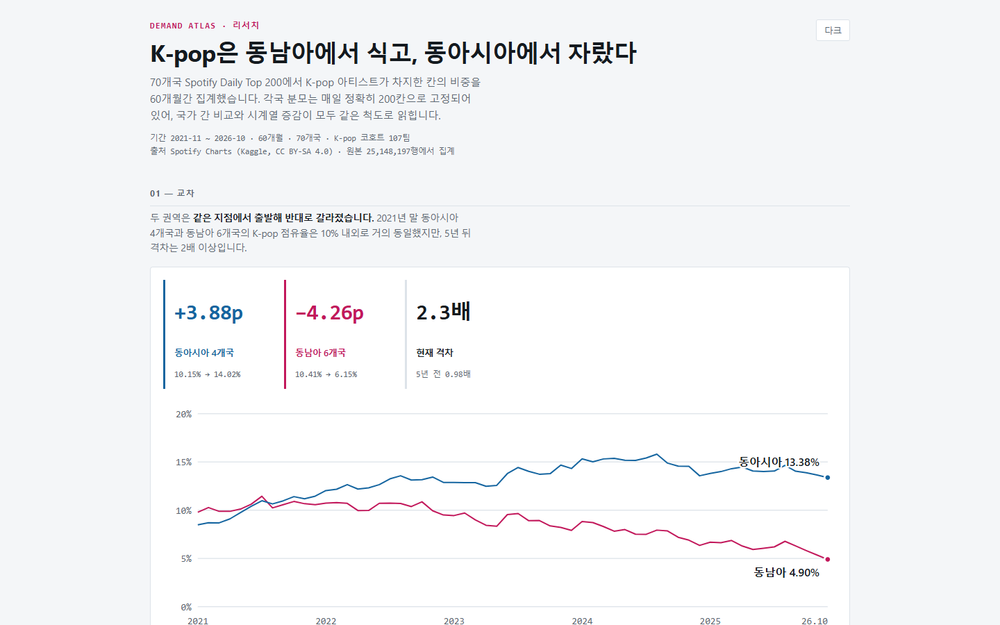
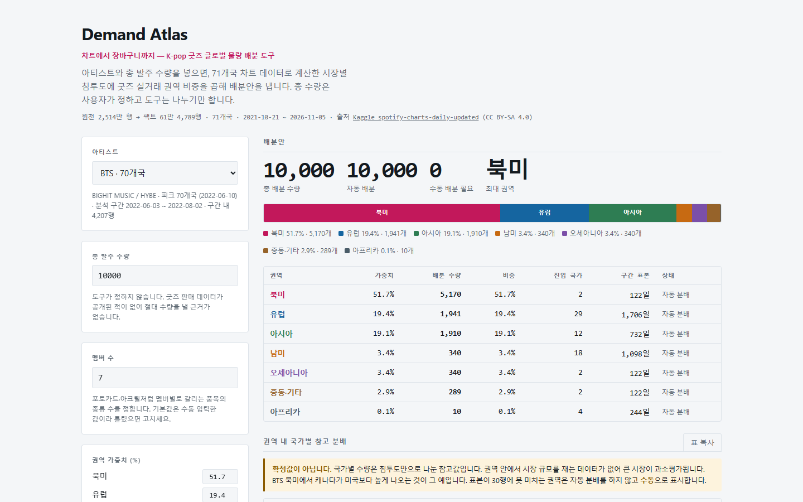

개인 개발 · 2026.11.04–11.10 연도 확인 필요
Demand
Atlas.
차트에서 장바구니까지
K-pop 굿즈 글로벌 물량 배분 도구
Global merchandise allocation planner powered by Spotify chart signals and regional resale evidence.
이정민 · 데이터 분석과 가공 / 사용자 중심 기획 / 공간 데이터 시각화
개인 개발 · 2026.11.04–11.10 연도 확인 필요
차트에서 장바구니까지
K-pop 굿즈 글로벌 물량 배분 도구
Global merchandise allocation planner powered by Spotify chart signals and regional resale evidence.
이정민 · 데이터 분석과 가공 / 사용자 중심 기획 / 공간 데이터 시각화
굿즈 배분 의사결정의 공백을 정의하고 차트 신호와 실거래 권역 비중을 결합했습니다.
Spotify 차트 코호트를 추출하고 국가·월 단위 분석 자료와 도구용 데이터를 생성했습니다.
정적 HTML 도구와 리서치 페이지, 지도와 상호작용, 자동 검사를 구성했습니다.
사용자 인터뷰·사용자 테스트 결과는 없습니다. 이 초안은 저장소의 기능 검사와 데이터 검증을 성과로 제시합니다.
“신규 아티스트와 신규 시장에는
작년 판매 실적도 없다.”
기업 담당자와 엔터 기획자는 총 발주량을 정한 뒤 국가별 수량을 배분해야 합니다. 공개된 굿즈 판매 데이터가 없어, 과거 실적과 감에 의존하기 쉬운 상황을 대상으로 설계했습니다.
사용자가 총 발주 수량을 입력하면 도구가 권역과 국가의 참고 배분안을 계산합니다. 총수요나 매출을 예측한다고 주장하지 않습니다.
현장 관찰·개인 경험의 구체 사례와 공공 보고서 출처는 확인 필요
자동화의 종료점은 발주 확정이 아니라 사람이 검토할 배분안입니다.
아티스트의 차트 체류와 순위를 이용해 권역 안 국가들의 상대적 반응을 비교합니다. 71개국 원천 중 분석은 70개국입니다.
Kaggle Spotify Charts · CC BY-SA 4.0 · 25,148,197행
북미 51.7%, 유럽 19.4%, 아시아 19.1%를 기본값으로 사용합니다. 다른 4개 권역은 잔여 9.8%를 나눈 자체 추정값입니다.
번개장터 2025 글로벌 K-POP 트렌드 리포트 보도 수치
gzip 청크로 분할
K-pop 코호트
배분 도구 대상팀
라벨 전체 문자열 매칭의 오탐을 `label` 컬럼 비교로 수정했고, 수동 추가팀 누락을 보정했습니다.
코호트 URI 1개 → 일별 차트 행 N개 → 국가·월 및 아티스트·국가 집계
label → URI → 일별 차트 행 → 집계 → 화면
SQLite는 데이터 가공용 중간 저장소입니다. 배포 화면은 JSON을 인라인한 정적 HTML이며 운영 DB는 없습니다.
필드 목록은 파이프라인 문서 기반. ‘선정 경로’는 개념 설명이며 실제 DB 컬럼이 아닙니다.

국가 · 60개월 시계열
동아시아 4개국과 동남아시아 6개국의 출발점은 비슷했지만, 리서치 화면은 기간 말의 차이를 시각화합니다. 국가는 동일한 코호트와 Top 200 분모로 비교했습니다.
코호트 고정·Top 200 밖의 활동 누락 때문에 이 추이를 전세계 팬덤의 실제 성장률로 해석하지 않습니다.
침투율 = 차트 체류일 비중 × 순위 가중 × 최근성 가중
peak_date − 7일에서 +53일까지. 전 기간 평균에 묻히는 집중 반응을 포착합니다.
차트가 보여주지 못하는 구매 시장의 분포를 외부 실거래 권역 비중으로 보정합니다.
같은 권역에 속한 국가들의 상대적 반응으로 참고 수량을 나눕니다.
권역 비중은 수정 가능한 입력값입니다. 남은 4개 권역의 기본 가중치는 자체 추정이므로 실제 운영 자료로 교체해야 합니다.
소수점 수량을 내림한 뒤, 남은 수량을 소수 부분이 큰 순서대로 1개씩 돌려줍니다.
따라서 국가별 수량의 합계가 사용자가 입력한 총량과 같아집니다. 재계산은 아티스트·수량·가중치 입력을 바꾸면 화면에 반영됩니다.
코드 발췌는 실제 저장소의 계산 부분입니다.
실제 코드: src/tool.tmpl.html L276–282
초기에는 전 기간 행 수로 표본을 판정해, 현재 분석 구간에 근거가 없는 권역에도 물량이 배정됐습니다. 판정을 60일 구간의 차트 체류일로 옮겼습니다.
30일 미만 → “표본 부족 · 수동”
표본 부족 수량은 총량 안에 남지만 국가별 자동 확정값으로 제시하지 않습니다.

권역 비중은 막대와 표로, 국가 침투도는 지도와 세부 표로 확인합니다.
지도 로드·배색이 실패하면 회색 지도를 정상 결과처럼 남기지 않고 안내로 전환합니다. 색각 이상과 명도·대비 검증을 통과한 색 조합을 사용했습니다.
화면은 저장소의 `index.html`을 로컬에서 캡처했습니다. CDN이 차단된 환경에서는 지도가 폴백될 수 있습니다.
아티스트, 수량 합계, 가중치, SKU, 복사 동작 등의 점검 항목.
시계열 값과 인터랙션, 집계 표시 등 리서치 페이지 점검 항목.
정상 렌더, 색상 적용 폴백, 실패 안내의 세 경로.
SQLite 인덱스 3개를 적용한 조회 시간은 README 기준 2.58초 → 0.26초로 기록되어 있습니다. 측정 환경과 반복 횟수는 확인이 필요합니다.
검사 항목 수는 저장소 문서 기준이며 실제 사용자 테스트 결과나 이용자 만족도를 뜻하지 않습니다.
동일 코호트와 동일한 Top 200 분모를 적용한 국가별 차트 침투 신호. 이 신호를 기반으로 한 참고 배분.
Top 200 밖의 활동, Spotify 이용률 차이, 국가별 구매력, 실제 굿즈 판매량은 포함되지 않습니다. 고정 코호트는 신규 팀의 등장을 완전히 반영하지 못합니다.
이 항목들을 확인하면 문구와 근거를 보강해 최종본으로 다듬겠습니다.